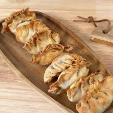

Gyozas Japonesas

Ingredientes:
- 1 paquete de obleas para gyozas
- 200 g de carne de cerdo picada
- 1/4 de col china (repollo)
- 2 dientes de ajo, picados finamente
- 1 cucharada de jengibre fresco, rallado
- 1 cucharada de salsa de soja
- 1 cucharadita de aceite de sésamo
- Sal y pimienta blanca
Preparación:
- Pica la col muy fina, ponle sal y déjala sudar 15 minutos. Escúrrela bien para quitar el exceso de agua.
- En un bol, mezcla la carne picada, la col, el ajo, el jengibre, la salsa de soja y el aceite de sésamo. Salpimienta al gusto.
- Coloca una cucharadita del relleno en el centro de una oblea de gyoza.
- Humedece el borde de la oblea con agua, dóblala por la mitad y sella los bordes haciendo pequeños pliegues.
- En una sartén con un poco de aceite, dora la base de las gyozas a fuego medio-alto.
- Cuando la base esté dorada, añade un chorrito de agua (unos 60 ml) a la sartén y tápala inmediatamente.
- Cocina al vapor durante 3-4 minutos o hasta que el agua se evapore y las gyozas estén cocidas.
- Sírvelas calientes con salsa de soja mezclada con un poco de vinagre de arroz.